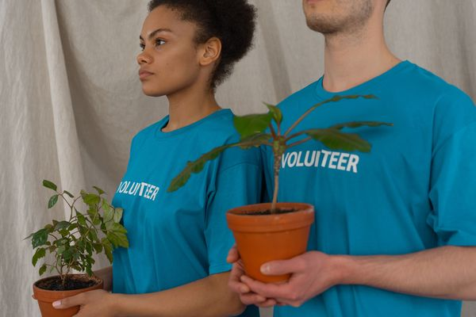

Quem somos

O Instituto Mãos Solidárias é uma organização sem fins lucrativos que atua desde 2015 apoiando famílias em situação de vulnerabilidade social.
Nossa missão
Promover dignidade e oportunidades por meio da educação, da alimentação e do trabalho voluntário.
Como ajudar
Você pode contribuir como doador ou voluntário. Conheça nossos projetos ou faça seu cadastro.